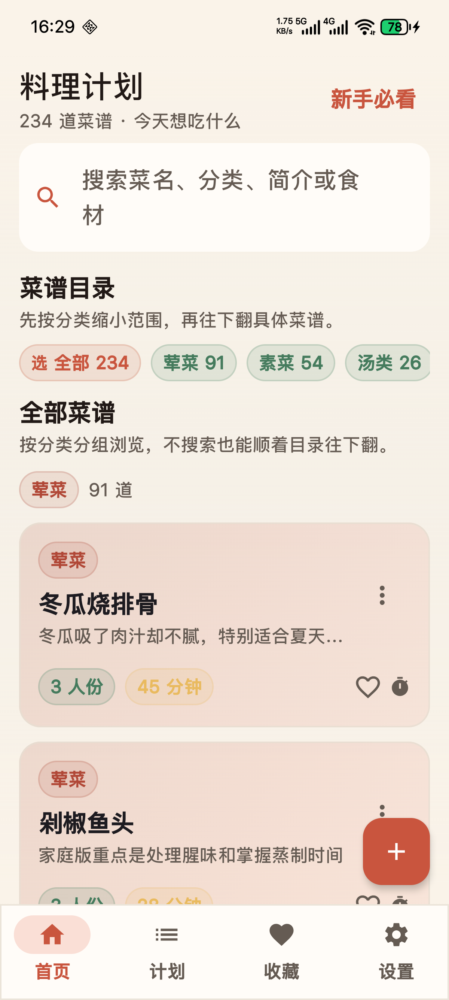
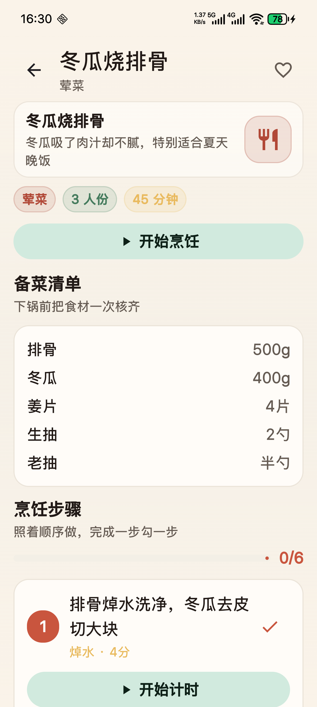
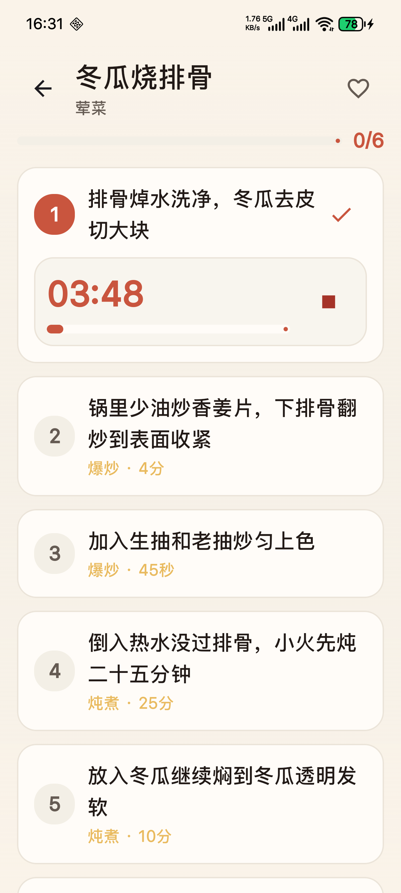
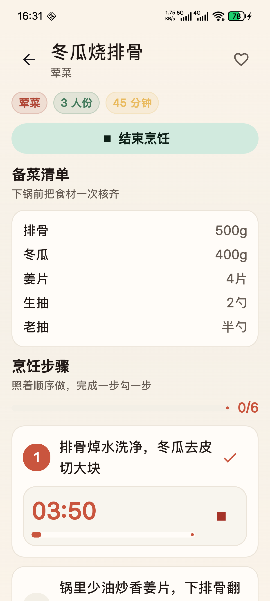
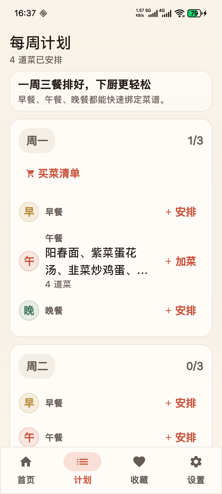
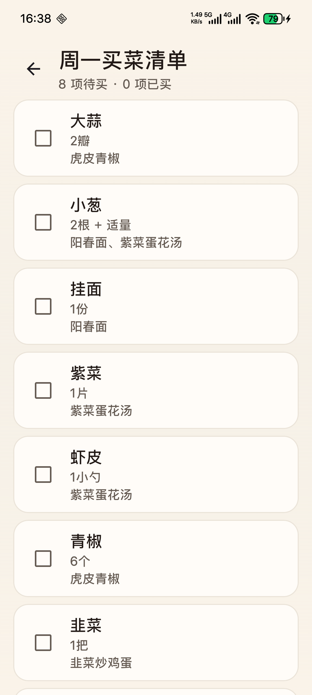
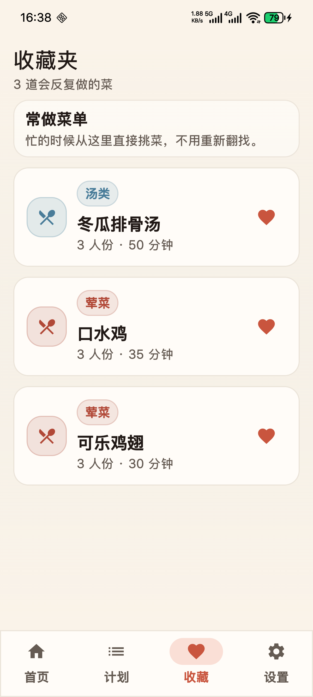
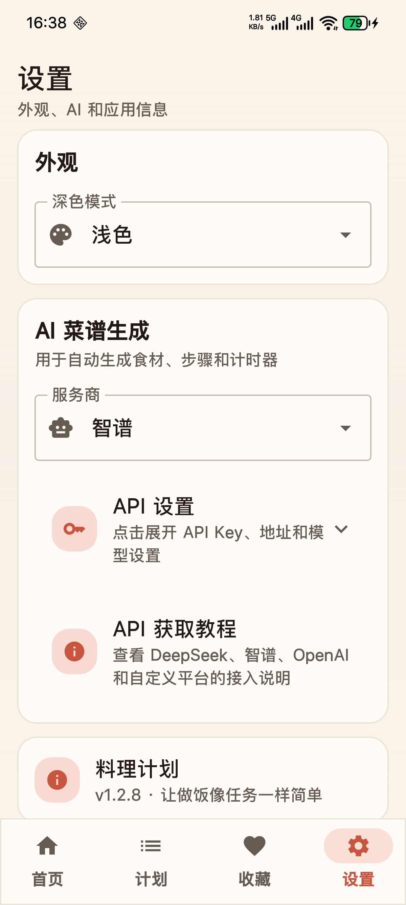

01
任务式菜谱
每道菜都拆成食材、步骤和进度节点，做饭时按步骤往下走，不用反复翻找文字。
这套设计重点不是“展示菜谱”，而是把做饭过程变成一个可以逐步完成的工作流。
每道菜都拆成食材、步骤和进度节点，做饭时按步骤往下走，不用反复翻找文字。
焯水、腌制、炖煮、蒸烤等需要时间的动作，可以直接在菜谱流程里开计时器。
提前安排早餐、午餐、晚餐，同一顿饭也能放入多道菜，适合整周统筹。
根据计划汇总当天或单餐所需食材，买菜时逐项勾选，减少遗漏和重复。
内置家常菜、主食、汤、凉菜、小吃和甜品，没接入 AI 也能直接离线使用。
可配置 DeepSeek、智谱、OpenAI 或兼容平台，按自己的口味快速生成新菜谱。
常做菜可以单独收藏，减少重复搜索，常用菜单更容易回到手边。
提供厨房名词和基础操作说明，并支持跟随系统、浅色和深色模式。
以下截图来自仓库中的实机预览，覆盖找菜、做菜、计划和采购的主流程。








用一条最短路径理解这个应用：先计划，再做饭，再买菜，最后回到常做菜。
从首页分类里找菜，或者直接搜索菜名、分类、简介和食材。
把菜放进早餐、午餐、晚餐，先把这周吃什么定下来。
打开菜谱后逐步勾选，遇到需要时间的步骤直接开计时器。
系统会根据计划汇总食材，买菜时逐项勾选，减少漏买。
这个页面可以直接放到 GitHub Pages 上使用，APK 下载链接也已经指向仓库里的发布文件。